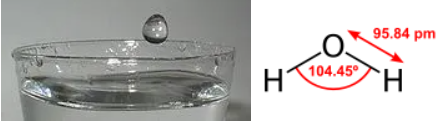
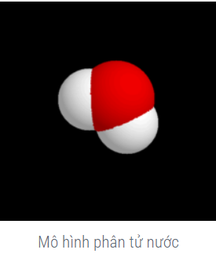
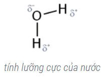
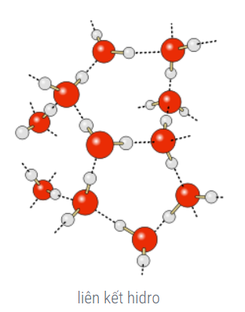
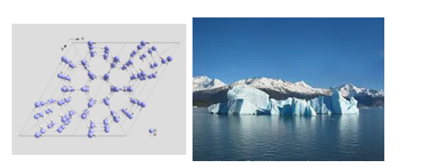
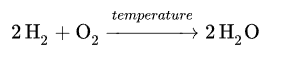

Nước là gì

Nước là gì
Nước (water, oxidane, Hydrogen oxide, Dihydrogen monoxit...)
Nước là một hợp chất hóa học của oxy và hidro, có công thức hóa học là H2O. Với các tính chất lý hóa đặc biệt (ví dụ như tính lưỡng cực, liên kết hiđrô và tính bất thường của khối lượng riêng), nước là một chất rất quan trọng trong nhiều ngành khoa học và trong đời sống. 70% diện tích bề mặt của Trái Đất được nước che phủ nhưng chỉ 0,3% tổng lượng nước trên Trái Đất nằm trong các nguồn có thể khai thác dùng làm nước uống.
Bên cạnh nước "thông thường" còn có nước nặng và nước siêu nặng. Ở các loại nước này, các nguyên tử hiđrô bình thường được thay thế bởi các đồng vị đơteri và triti. Nước nặng có tính chất vật lý (điểm nóng chảy cao hơn, nhiệt độ sôi cao hơn, khối lượng riêng cao hơn) và hóa học khác với nước thường..

Hương vị và mùi
Nước tinh khiết thường được mô tả là không vị và không mùi, mặc dù con người có cảm biến đặc biệt có thể cảm nhận được sự có mặt của nước trong miệng, và ếch được biết là có khả năng ngửi thấy nó. Tuy nhiên, nước từ các nguồn thông thường (bao gồm nước khoáng đóng chai) thường có nhiều chất hòa tan, có thể làm cho nó có nhiều hương vị và mùi khác nhau. Con người và các động vật khác đã phát triển những giác quan cho phép họ đánh giá được chất lượng của nước bằng cách tránh nước quá mặn hoặc quá hôi.
Màu sắc và hình dáng
Màu sắc tự nhiên của nước thường được xác định bởi các chất rắn lơ lửng và chất lơ lửng, hoặc bằng cách phản chiếu bầu trời, hơn là do nước. Điều này có nghĩa là màu sắc của nước phụ thuộc vào góc phản xạ và khúc xạ của ánh sáng chiếu đến.
Ánh sáng trong phổ điện từ nhìn thấy có thể đi qua một vài mét nước tinh khiết (hoặc băng) mà không có sự hấp thụ đáng kể, vì vậy nó trông trong suốt và không màu. Như vậy thực vật thủy sinh, tảo, và sinh vật quang hợp khác có thể sống trong nước sâu đến hàng trăm mét, bởi vì ánh sáng mặt trời có thể tiếp cận chúng. Hơi nước cơ bản không nhìn thấy được như một chất khí.
Tuy nhiên, với độ dày 10 mét trở lên, màu sắc của nước (hoặc băng) là màu ngọc lam (màu xanh lục nhạt), vì phổ hấp thụ của nó có độ sắc nét tối thiểu ở màu tương ứng của ánh sáng (1/227 m −1 tại 418 nm). Màu sắc trở nên ngày càng mạnh mẽ và tối hơn với độ dày ngày càng tăng. (Thực tế không có ánh sáng mặt trời đến được các phần của đại dương dưới độ sâu 1000 mét) Mặt khác, tia cực tím bị nước hấp thụ mạnh. Và do thiếu ánh sáng và áp lực vô cùng lớn, như Rãnh Mariana, hơn 1 × 108 N/m2 Do đó không sinh vật nào có thể sống dưới đáy đại dương này.
Các chỉ số khúc xạ của nước lỏng (1.333 ở 20 °C) là cao hơn nhiều so với không khí (1.0), tương tự như của alkan và ethanol, nhưng thấp hơn so với glycerol (1,473), benzen (1,501), carbon disulfua (1.627), và các loại kính phổ biến (1.4 đến 1.6). Chỉ số khúc xạ của băng (1.31) thấp hơn lượng nước.
Nước không có hình dạng nhất định, nó chỉ tồn tại hình dạng tại một thời điểm trong vật mà nó chứa. Nó có cấu trúc phân tử di chuyển trượt lên nhau và do đó nước rất dễ mất hình dạng, tuy vậy nước rất khó nén, lợi dụng tính chất này, người ta áp dụng nguyên lý Pascal cho các máy nén thủy lực.
Hình học của phân tử nước
Phân tử nước bao gồm hai nguyên tử hiđrô và một nguyên tử ôxy. Về mặt hình học thì phân tử nước có góc liên kết là 104,45°. Do các cặp điện tử tự do chiếm nhiều chỗ nên góc này sai lệch đi so với góc lý tưởng của hình tứ diện. Chiều dài của liên kết O-H là 95,84 picômét.

Tính lưỡng cực
Ôxy có độ âm điện cao hơn hiđrô. Việc cấu tạo thành hình ba góc và việc tích điện từng phần khác nhau của các nguyên tử đã dẫn đến cực tính dương ở các nguyên tử hiđrô và cực tính âm ở nguyên tử ôxy, gây ra sự lưỡng cực. Dựa trên hai cặp điện tử đơn độc của nguyên tử ôxy, lý thuyết VSEPR đã giải thích sự sắp xếp thành góc của hai nguyên tử hiđrô, việc tạo thành moment lưỡng cực và vì vậy mà nước có các tính chất đặc biệt. Vì phân tử nước có tích điện từng phần khác nhau nên một số sóng điện từ nhất định như sóng cực ngắn có khả năng làm cho các phân tử nước dao động, dẫn đến việc nước được đun nóng. Hiện tượng này được áp dụng để chế tạo lò vi sóng

Liên kết Hidro
Các phân tử nước tương tác lẫn nhau thông qua liên kết hiđrô và nhờ vậy có lực hút phân tử lớn. Đây không phải là một liên kết bền vững. Liên kết của các phân tử nước thông qua liên kết hiđrô chỉ tồn tại trong một phần nhỏ của một giây, sau đó các phân tử nước tách ra khỏi liên kết này và liên kết với các phân tử nước khác

Đường kính nhỏ của nguyên tử hiđrô đóng vai trò quan trọng cho việc tạo thành các liên kết hiđrô, bởi vì chỉ có như vậy nguyên tử hiđrô mới có thể đến gần nguyên tử ôxy một chừng mực đầy đủ. Các chất tương đương của nước, Ví dụ như đihiđrô sulfua (H2S), không tạo thành các liên kết tương tự vì hiệu số điện tích quá nhỏ giữa các phần liên kết. Việc tạo chuỗi của các phân tử nước thông qua liên kết cầu nối hiđrô là nguyên nhân cho nhiều tính chất đặc biệt của nước, ví dụ như nước mặc dù có khối lượng mol nhỏ vào khoảng 18 g/mol vẫn ở thể lỏng trong điều kiện tiêu chuẩn. Ngược lại, H2S tồn tại ở dạng khí cùng ở trong những điều kiện này. Nước có khối lượng riêng lớn nhất ở 4 độ Celcius và nhờ vào đó mà băng đá có thể nổi lên trên mặt nước; hiện tượng này được giải thích nhờ vào liên kết cầu nối hiđrô.
Các tính chất hóa lý của nước
Cấu tạo của phân tử nước tạo nên các liên kết hiđrô giữa các phân tử
là cơ sở cho nhiều tính chất của nước. Cho đến nay một số tính chất
của nước vẫn còn là câu đố cho các nhà nghiên cứu mặc dù nước đã được
nghiên cứu từ lâu.
Nhiệt độ nóng chảy và nhiệt độ sôi của nước đã được Anders Celsius
dùng làm hai điểm mốc cho độ bách phân Celcius. Cụ thể, nhiệt độ đóng
băng của nước là 0 độ Celcius, còn nhiệt độ sôi (760 mmHg) bằng 100 độ
Celcius. Nước đóng băng được gọi là nước đá. Nước đã hóa hơi được gọi
là hơi nước. Nước có nhiệt độ sôi tương đối cao nhờ liên kết hiđrô
Dưới áp suất bình thường nước có khối lượng riêng (tỷ trọng) cao nhất
là ở 4 °C: 1 g/cm³ đó là vì nước vẫn tiếp tục giãn nở khi nhiệt độ
giảm xuống dưới 4 °C. Điều này không được quan sát ở bất kỳ một chất
nào khác. Điều này có nghĩa là: Với nhiệt độ trên 4 °C, nước có đặc
tính giống mọi vật khác là nóng nở, lạnh co; nhưng với nhiệt độ dưới 4
°C, nước lại lạnh nở, nóng co. Do hình thể đặc biệt của phân tử nước
(với góc liên kết 104,45°), khi bị làm lạnh các phân tử phải dời xa ra
để tạo liên kết tinh thể lục giác mở. Vì vậy mà tỉ trọng của nước đá
nhẹ hơn nước thể lỏng.[5]
Khi đông lạnh dưới 4 °C, các phân tử nước phải dời xa ra để tạo liên
kết tinh thể lục giác mở. Nước là một dung môi tốt nhờ vào tính lưỡng
cực. Các hợp chất phân cực hoặc có tính ion như axít, rượu và muối đều
dễ tan trong nước. Tính hòa tan của nước đóng vai trò rất quan trọng
trong sinh học vì nhiều phản ứng hóa sinh chỉ xảy ra trong dung dịch
nước.

Nước tinh khiết không dẫn điện. Mặc dù vậy, do có tính hòa tan tốt,
nước hay có tạp chất pha lẫn, thường là các muối, tạo ra các ion tự do
trong dung dịch nước cho phép dòng điện chạy qua
Về mặt hóa học, nước là một chất lưỡng tính, có thể phản ứng như một,
có thể hiểu đơn giản khi một oxit axit hoặc một oxit bazơ tác dụng với
nước sẽ tạo ra dung dịch axit hay bazơ tương ứng. Ở 7 pH (trung tính)
hàm lượng các ion hydroxyt (OH-) cân bằng với hàm lượng của hydronium
(H3O+). Khi phản ứng với một axit mạnh hơn ví dụ như HCl, nước phản
ứng như một chất kiềm: HCl + H2O ↔ H3O+ + Cl- Với ammoniac nước lại
phản ứng như một axit: NH3 + H2O ↔ NH4+ + OH-
Sử dụng
Trong công nghiệp
Trong công nghiệp, nước có thể hóa lỏng bằng cách làm tan băng đá, hoặc lọc từ nước biển và các nguồn nước không tinh khiết bằng các phương pháp khác nhau như lọc, chiết, tách, chưng cất (Chưng cất là một phương pháp tách dùng nhiệt để tách hỗn hợp đồng thể của các chất lỏng khác nhau. Chất rắn hòa tan, ví dụ như các loại muối, được tách ra khỏi chất lỏng bằng cách kết tinh. Dung dịch muối có thể làm cô đặc bằng cách cho bay hơi), bốc hơi nước,... có sự kết hợp của ngưng tụ.
Trong phòng thí nghiệm
Chủ yếu người ta dùng cách cho H2 tác dụng với O2 để xảy ra phản ứng hóa hợp tạo nước nhưng nguy hiểm vì nó phát nổ, khi tỉ lệ H:O là 2:1 thì hỗn hợp nổ mạnh nhất. Ta có phương trình điều chế nước như sau:

Nước trong đời sống
Ở đây có ba trạng thái tập hợp của nước cạnh nhau: tảng băng ở thể rắn,
hồ nước ở thể lỏng và hơi nước vô hình trong không khí là nước ở thể
khí.
Cuộc sống trên Trái Đất bắt nguồn từ trong nước. Tất cả các sự sống
trên Trái Đất đều phụ thuộc vào nước và vòng tuần hoàn nước
Nước có ảnh hưởng quyết định đến khí hậu và là nguyên nhân tạo ra thời
tiết. Năng lượng mặt trời sưởi ấm không đồng đều các đại dương đã tạo
nên các dòng hải lưu trên toàn cầu. Dòng hải lưu Gulf Stream vận
chuyển nước ấm từ vùng Vịnh Mexico đến Bắc Đại Tây Dương làm ảnh hưởng
đến khí hậu của vài vùng châu Âu.
Nước là thành phần quan trọng của các tế bào sinh học và là môi trường
của các quá trình sinh hóa cơ bản như quang hợp.
Hơn 75% diện tích của Trái Đất được bao phủ bởi nước. Lượng nước trên
Trái Đất có vào khoảng 1,38 tỉ km³. Trong đó 97,4% là nước mặn trong
các đại dương trên thế giới, phần còn lại, 2,6%, là nước ngọt, tồn tại
chủ yếu dưới dạng băng tuyết đóng ở hai cực và trên các ngọn núi, chỉ
có 0,3% nước trên toàn thế giới (hay 3,6 triệu km³) là có thể sử dụng
làm nước uống. Việc cung cấp nước uống sẽ là một trong những thử thách
lớn nhất của loài người trong vài thập niên tới đây. Nguồn nước cũng
đã là nguyên nhân gây ra một trong những cuộc chiến tranh ở Trung Cận
Đông.
Nước được sử dụng trong công nghiệp từ lâu như là nguồn nhiên liệu
(cối xay nước, máy hơi nước, nhà máy thủy điện) như là chất trao đổi
nhiệt.
Nhà triết học người Hy Lạp Empedocles đã coi nước là một trong bốn
nguồn gốc tạo ra vật chất (bên cạnh lửa, đất và không khí). Nước cũng
nằm trong Ngũ Hành của triết học cổ Trung Hoa.
Với tình trạng ô nhiễm ngày một nặng và dân số ngày càng tăng, nước
sạch dự báo sẽ sớm trở thành một thứ tài nguyên quý giá không kém dầu
mỏ trong thế kỷ trước. Nhưng không như dầu mỏ có thể thay thế bằng các
loại nhiên liệu khác như điện, nhiên liệu sinh học, khí đốt..., nước
không thể thay thế và trên thế giới tất cả các dân tộc đều cần đến nó
để bảo đảm cuộc sống của mình, cho nên vấn đề nước trở thành chủ đề
quan trọng trên các hội đàm quốc tế và những mâu thuẫn về nguồn nước
đã được dự báo trong tương lai. Tuy nhiên gần đây người ta đã lọc được
nước biển từ một thiết bị lọc rẻ tiền và từ đó giải quyết được vấn đề
thiếu nước.